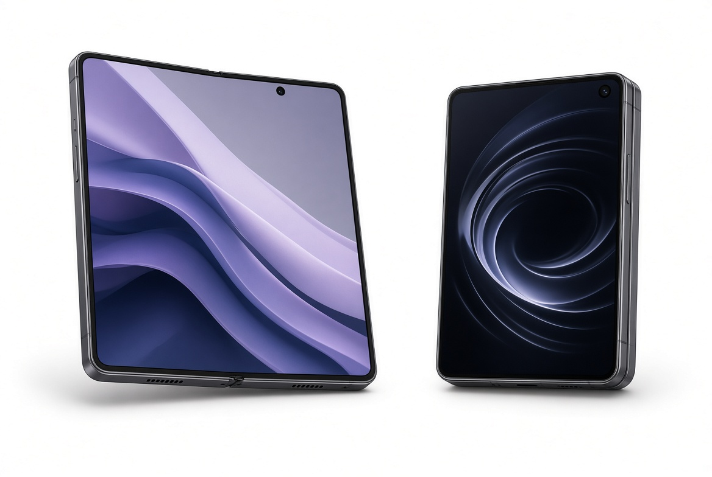

Kichik savdo do'konidan dunyoning eng yirik texnologiya kompaniyasiga qadar bo'lgan yo'l.
Lee Byung-chul Daegu shahrida Samsung Sanghoe savdo kompaniyasini tashkil etdi. Quritilgan baliq, makaron va boshqa oziq-ovqat mahsulotlari bilan savdo qildi.

Samsung Electronics tashkil etildi. Birinchi mahsulot — oq-qora televizorlar. Elektronika sanoatiga kirish.

Birinchi 64K DRAM ishlab chiqarildi. Yarimo‘tkazgichlar bo‘yicha dunyo liderligiga yo‘l ochildi.

Birinchi Galaxy S smartfoni chiqarildi. Android davrida Samsung yetakchilikka chiqdi.

Galaxy Fold — birinchi ommaviy foldable telefon taqdim etildi.

Galaxy AI, Neo QLED, 5G va yarimo‘tkazgichlar sohasida yangi yutuqlar.

Galaxy S25/S26 seriyasi, kuchaytirilgan AI imkoniyatlari va yangi avlod televizorlar. Digital City — innovatsiya markazi.
2010-yildan beri dunyo bo‘yicha eng mashhur Android smartfonlari.
18+ yil ketma-ket dunyodagi eng ko‘p sotiladigan televizor ishlab chiqaruvchisi.
Dunyo bo‘yicha yetakchi DRAM va NAND ishlab chiqaruvchi.
Galaxy S smartfoni chiqarildi. Android platformasida dunyo bo'ylab yetakchi brendga aylandi.
Birinchi buklanadigan telefon - Galaxy Fold taqdim etildi. Yangi kategoriya yaratildi.
Galaxy Z seriyasi, AI texnologiyalari, 5G, yarimo'tkazgichlarda yangi yutuqlar. Dunyo bo'yicha TV va xotira chipslari bo'yicha yetakchi.
Galaxy S26 seriyasi, Privacy Display, yangi AI funksiyalari. Kompaniya barqaror o'sishda davom etmoqda.